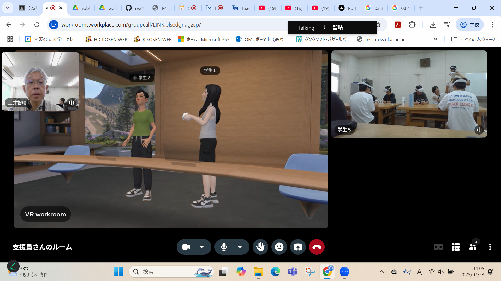

第2週目
2-1 2週目のレポートをHTMLで作る
1.内容
HTLMをつかって授業の内容や感想を、定められた場所に書く。
2.感想
学習した内容を実践したときに自分が感じた感想を
自分で考えた文章で作成する（50文字以上．100文字程度を推奨．※生成AIを使ってはいけない）
3. 2週目が完成した人は1週目のレポートも完成させる
2-2 機械学習体験
1.内容
グー、チョキ、パーのそれぞれの手の形を、向きや大きさを変えて100枚ずつぐらい写真を撮って
グー、チョキ、パーを認識できるAIを作った。
2.感想
写真を撮ったものの、手をチョキの形にしてもパーと認識されたりしたからちゃんと認識させるた
めには、あらゆる手の向きの写真を撮ったり写真の枚数を増やす必要があると分かった。
2-3 VR（バーチャルリアリティー：Virtual Reality）の体験

1.内容
VRゴーグルをつけて、ロブロックスやバーチャル会議を体験した。周りを見たり、手を振ったり
移動したりしてバーチャル空間を体験した。
2.感想
現実で指を動かすとVR内でも指が動いていて驚いた。しっかりリアルさもあって、対面しなくても
世界の人とつながることができることを実感した。